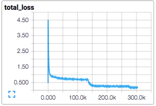
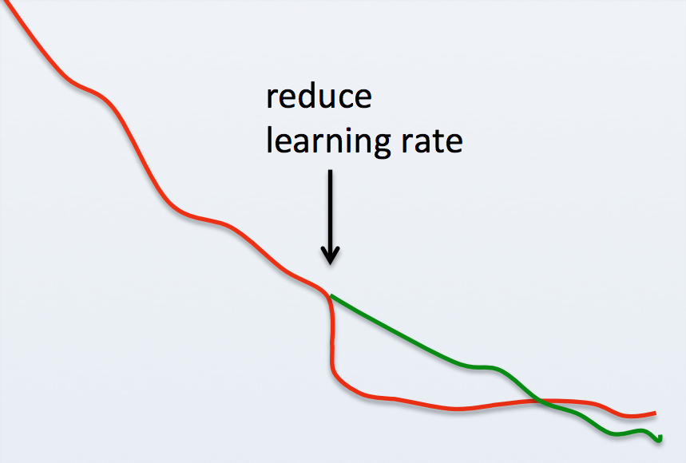

In Part 1 of this tutorial, we learned how to prepare twitter data for training. In this section, we'll learn how to use that data to train models. We'll begin with a basic introduction to model training as well as common training idioms, jargon, and practices. Then we'll learn how we can automate part of the training process using a technique called hyperparameter search to find a good model configuration given limited compute resources.
At a high level, training machine learning models is simple. You initialize a model with random weights and feed it batches of training data X, comparing its output y^ (pronounced "Y Hat") to the expected output y provided by labeled data, tweaking its weights in the process in an attempt to minimize the error between y^ and y. Each time you feed your entire training dataset to the model, it's called an epoch.
After each epoch, you evaluate your model by feeding it unseen validation data and again comparing its outputs y^ to the expected outputs y. During this evaluation you don't update the model weights as you did during training. The average error from the training epoch, called the loss, is then compared with the average error from the validation evaluation, called the val_loss. If the val_loss is lower than it was last epoch, you usually train for another epoch and then repeat the process. If it's higher than it used to be, it may be that your model is learning to memorize the training data instead of using it to extract useful patterns that lead to good generalization on unseen data. In this case, you may be overfitting your data, and you usually stop training there, saving the current model weights to disk. At this point you consider your model "trained."
There are lots of variables at play during the model training process and the complexity of some of the steps can seem daunting. There are lots of ways to do it wrong and only a few ways to do it right. That said, we'll blaze ahead covering the most important details. If parts of the code we introduce next goes over your head, don't worry about it. There are a lot of moving parts and big concepts to digest so take it in stride and don't worry if entire sections of code seem foggy. The goal is to get you up and running with working code that don't look completely foreign. From there you can pick and prod at it, learning the intricacies as you go.
Enter the char-rnn-text-generation/ directory that we created in Part 1. From here, we'll install several python dependencies. If you prefer to do that inside of a python virtual environment, that's fine too. Just make sure that you are using python3.
# download requirements.txt, which contains the python dependencies needed for model training
wget -O requirements.txt https://raw.githubusercontent.com/brangerbriz/char-rnn-text-generation/master/requirements.txt
# install the dependencies
sudo -H pip3 install -r requirements.txt
If you have an NVIDIA GPU in your machine and have CUDA setup, you can install the GPU accelerated version of tensorflow with pip3 install tensorflow-gpu==1.10.1.
You should now have several python libraries installed.
Next, we'll copy over some of the data loading utilities we wrote in Part 1 to a file called utils.py.
wget -O utils.py https://raw.githubusercontent.com/brangerbriz/char-rnn-text-generation/master/utils.py
You may notice a few extra functions in this file but most of it should look familiar. Notice that we've renamed data_generator() to io_batch_generator(). We've also taken advantage of Numpy's powerful array operations to simplify some of our encoding/decoding logic. Keras operates on numpy N-dimensional arrays, so not only do our Numpy modifications produce more concise code, they also prepare the data in a way that Keras prefers to accept it.
def encode_text(text, char2id=CHAR2ID):
"""
encode text to array of integers with CHAR2ID
"""
return np.fromiter((char2id.get(ch, 0) for ch in text), int)
def decode_text(int_array, id2char=ID2CHAR):
"""
decode array of integers to text with ID2CHAR
"""
return "".join((id2char[ch] for ch in int_array))
def one_hot_encode(indices, num_classes):
"""
one-hot encoding
"""
return np.eye(num_classes)[indices]
As you can imagine, we'll use util.py to hold some of our general purpose utility functions like those used for data loading and managing. This is good practice because these functions will be used by several of our scripts. Next, lets create a new file called train.py and add the following code snippet.
# a few basic imports
import os
import utils
# some more complex imports from Keras. We'll use these in a bit.
from keras.callbacks import ModelCheckpoint, TensorBoard
from keras.callbacks import EarlyStopping, LambdaCallback
from keras.layers import Dense, Dropout, Embedding, LSTM, TimeDistributed
from keras.models import load_model, Sequential
# these are our hyperparameters. They define the architecture and
# configuration of our model.
BATCH_SIZE=64
SEQ_LEN=64
EMBEDDINGS_SIZE=32
RNN_SIZE=128
NUM_LAYERS=1
DROP_RATE=0.2 # 20% dropout
NUM_EPOCHS=1
# we'll save our model to checkpoints/checkpoint.hdf5
CHECKPOINT_DIR='checkpoints'
CHECKPOINT_PATH=os.path.join(CHECKPOINT_DIR, 'checkpoint.hdf5')
TRAIN_TEXT_PATH=os.path.join('data', 'tweets-split', 'train.txt')
VAL_TEXT_PATH=os.path.join('data', 'tweets-split', 'test.txt')
# here's where we'll put our code for training the model
def train():
pass
# here's where we'll put our code for constructing the model.
# this will be called from inside train().
def build_model():
pass
# run train() as the main function for this file.
train()
We'll use this template to build out our actual training algorithm. Before we do, lets dive into the meaning of some of these hyperparameter constants.
Hyperparameters are the parameters that the machine learning practitioner chooses. This is in contrast to the model's parameters, or weights, which are updated automatically by the learning algorithm during training. Think of hyperparameters like meta-parameters: They are the high-level parameters that make up the model's configuration and training behavior, not what the model learns during training. Different algorithms will have different hyperparameters to tweak, but there are several that you will encounter quite regularly.
BATCH_SIZE: This is the number of data samples X that will be fed into the model before updating the model's weights. Weight updates are calculated across an average of all samples in the batch, so a low batch size means more updates dependent on fewer samples while a high batch size means fewer updates, but each update will factor in a smoother average across more samples. This hyperparameter is often constrained by your computer's memory resources, as the batch size defines how many samples your model must be able to hold in memory (or GPU memory) at once.RNN_SIZE: The number of RNN units, or weights, per layer. The more units per layer the higher the model's capacity, but also the more compute resources and disk space required to run and save it. The RNN_SIZE can be considered the width of the model.NUM_LAYERS: The depth of the model, or number of RNN_SIZE layers it has. The number of units is RNN_SIZE * NUM_LAYERS. However, the time performance cost of adding a new layer seems to be far greater than doubling the RNN_SIZE. As a rule of thumb, wider networks are often easier to change, though in some circumstances deeper networks perform better.DROP_RATE: The Dropout rate defines what percentage of neurons will be randomly turned off during each training batch. Dropout is an effective regularization method (see Regularization) that is commonly used to combat overfitting. If you find that your training loss is consistently lower than your validation loss, try increasing the dropout percentage.NUM_EPOCHS: The number of epochs, or full passes through your training dataset, to train your model before stopping. While this might not sound like a hyperparameter, it is. Early stopping, the process of halting model training once val_loss has stopped improving, is actually a form of regularization. Keras has a method for doing just that which we will explore later. Here, we define NUM_EPOCHS as the maximum number epochs before forcing training to stop.Several of our hyperparameters are more unique to our RNN character generation model. You will likely see them in other models in the future, but perhaps more rarely than the others.
SEQ_LEN: The number of individually encoded adjacent characters to group as a sequence and feed to the model as a single input sample. SEQ_LEN=10 might encode the input sequence hello ther while SEQ_LEN=5 would only include hello.EMBEDDING_SIZE: The length, or size, of the learned word embeddings for each character. This size can be set arbitrarily, however it's value will effect model performance and compute resources.For our model, we'll use word embeddings to encode our example data X. The input to our model will have a shape that is equal to (BATCH_SIZE, SEQ_LEN, EMBEDDING_SIZE) and each batch of samples will have BATCH_SIZE * SEQ_LEN * EMBEDDING_SIZE float values. We'll encode our labeled data y, using one-hot encoding, so its shape will be (BATCH_SIZE, SEQ_LEN, VOCAB_SIZE), with the number of float values for y equal to the product of these there hyperparameters as well. During training, we'll use a sequence of characters as input and expect a sequence of the same number of characters as output. This type of model is called a sequence-to-sequence model.
Further in the chapter we'll explore a technique called hyperparameter search that can be used to choose a set of values for these hyperparemeters. For now, we'll leave these values as they are and fill in our train.py template with code to actually train our models.
We'll start by using the Keras API, along with our hyperparameters, to build a model. Keras provides a high-level API for building basic neural network architectures using common building blocks like layers. It abstracts away the actual matrix multiplications and calculus needed to train a model. You'll be left with the task of designing your model architecture and figuring out how to wrangle data into and out of the model while Keras handles the actual "learning". Go ahead and fill in the empty build_model() function with the contents below.
def build_model():
# Keras' Sequential() model API allows us to construct a hierarchical
# model where the output of each layer acts as the input to the next.
model = Sequential()
model.add(Embedding(utils.VOCAB_SIZE, EMBEDDINGS_SIZE,
batch_input_shape=(BATCH_SIZE, SEQ_LEN)))
model.add(Dropout(DROP_RATE))
for _ in range(NUM_LAYERS):
model.add(LSTM(RNN_SIZE, return_sequences=True, stateful=True))
model.add(Dropout(DROP_RATE))
model.add(TimeDistributed(Dense(utils.VOCAB_SIZE, activation="softmax")))
# Here is a breakdown of the layers as well as the shape of our model
# at each level.
# Embedding layer, maps class int labels to word embedding vectors
# input shape: (BATCH_SIZE, SEQ_LEN)
# output shape: (BATCH_LEN, SEQ_LEN, EMBEDDING_SIZE)
# Dropout
# randomly "turns off" 20% of the input neurons each batch
# LSTM Layer 1 to N
# input shape: (BATCH_SIZE, SEQ_LEN, EMBEDDING_SIZE (or RNN_SIZE))
# output shape: (BATCH_SIZE, SEQ_LEN, RNN_SIZE)
# followed by another layer of dropout
# Time Distributed Dense
# input shape: (BATCH_SIZE, SEQ_LEN, EMBEDDING_SIZE)
# output shape: (BATCH_SIZE, SEQ_LEN, utils.VOCAB_SIZE)
# uses softmax activation function to map each input character to a
# probability distribution over a likely output character
# the output distributions can then be sampled from to predict the next
# character in the sequence
return model
Lets break these layers down. First, we've got an embedding layer, which we define as having utils.VOCAB_SIZE unique classes and an output size of EMBEDDING_SIZE. This is our look up table that transforms our integer valued class labels to word embeddings. Next we add a dropout layer which will randomly null out 20% of our input features before feeding them to the input layer. This effectively destroys input data and as a result adds variation to our input samples in a way that makes it more difficult for the model to memorize the training data. By doing so we encourage the model to work harder to extract more meaningful patterns from the data.
Dropout is followed by a series of LSTM layers, starting with the input layer. LSTM stands for long short-term memory and it's a popular unit type to use with recurrent neural networks. Since it was introduced in the late 1990s it has been shown to perform better than "vanilla" RNN units at learning long-term dependence between input sequences, a task that all neural network models actually perform pretty poorly at. The LSTM layers are where the learning happens, though we won't go into the details of just how that works here. Each layer after the input layer is called a "hidden" layer as the relationship between the input values and the neurons becomes opaque and non-linear, or "hidden."
Finally we pass the output from our final hidden layer to a set of dense output layers. This is a common practice in classification tasks. A dense layer is a flat set of vanilla neural network units. If we use a dense layer as the final layer we set the number of output units equal to the number of class labels. The value at each index then represents the likelihood that a given input sample belongs to the one-hot class label at that same index. By using a "softmax" activation function, we normalize the output from the final dense layer, transforming it into a probability distribution where all elements in the vector sum to 1.0. Each index represents the percent chance that an input belongs to its corresponding class label. We have one dense layer for each character in the output sequence, which is handled by the call to TimeDistributed().
If you followed that it means that our model is expecting to be fed an input of integers and will output a sequence of vector values, each with a length equal to the number of characters we have in our vocab size. Each vector represents a predicted character in the output sequence. The values in each of these vectors corresponds to the probability the model has assigned to each possible output class.
Now that we've added code that creates our model, lets add the code that trains it. Apologies ahead of time for slamming you in the face with a wall full of monospaced source code, but there isn't a lot of sugar coating for this bit of training code. I've done my best to annotate it with helpful comments and we'll cover the basics in more detail once you've powered through reading it.
def train():
# create our model using the build_model() function we just wrote ^
model = build_model()
# once we've loaded and built the model, we need to compile it using an
# optimizer and a loss. The loss must be categorical_crossentropy, because
# our task is a multi-class classification problem.
model.compile(loss="categorical_crossentropy", optimizer='rmsprop')
# Callbacks are hooked functions that keras will call automagically
# during model training. For more info, see https://keras.io/callbacks/
# - EarlyStopping: Will stop model training once val_loss plateuas
# or starts increasing.
# - TensorBoard: logs training metrics so that they can be viewed in
# tensorboard.
# - ModelCheckpoint: save model weights as checkpoints after
# each epoch. Only save a checkpoint if val_loss has improved.
# - LambdaCallback: Your own custom hooked function. Here we reset the
# model's RNN states between Epochs.
callbacks = [
# if val_loss doesn't improve more than 0.01 for three epochs in a row
# stop training the model
EarlyStopping(monitor='val_loss', patience=3, min_delta=0.01),
TensorBoard(os.path.join(CHECKPOINT_DIR, 'logs')),
# only save model checkpoints if the val_loss improved during this
# epoch. If it didn't, don't overwrite a better model we already saved
ModelCheckpoint(CHECKPOINT_PATH, verbose=1, save_best_only=True),
# you MUST reset the model's RNN states between epochs
LambdaCallback(on_epoch_end=lambda epoch, logs: model.reset_states())
]
# because we may not be able to fit all of our training data into RAM at
# once we will use a python generator to lazy-loads (and release) data
# from disk into RAM as we need it. We will use one generator for
# validation data and another for training data.
val_generator = utils.io_batch_generator(VAL_TEXT_PATH,
batch_size=BATCH_SIZE,
seq_len=SEQ_LEN,
one_hot_labels=True)
train_generator = utils.io_batch_generator(TRAIN_TEXT_PATH,
batch_size=BATCH_SIZE,
seq_len=SEQ_LEN,
one_hot_labels=True)
# the way the generator is written, we won't know how many samples are in
# the entire dataset without processing it all once. We need to know this
# number so that we can know the number of batch steps per epoch. This
# isn't elegant, but it is a tradeoff that is worth making to have no
# limit to the amount of training data we can process using our generator.
train_steps_per_epoch = get_num_steps_per_epoch(train_generator)
val_steps_per_epoch = get_num_steps_per_epoch(val_generator)
print('train_steps_per_epoch: {}'.format(train_steps_per_epoch))
print('val_steps_per_epoch: {}'.format(val_steps_per_epoch))
# now that we've computed train_steps_per_epoch and val_steps_per_epoch
# we will re-create the generators so that they begin at
# epoch 0 instead of 1
val_generator = utils.io_batch_generator(VAL_TEXT_PATH,
batch_size=BATCH_SIZE,
seq_len=SEQ_LEN,
one_hot_labels=True)
train_generator = utils.io_batch_generator(TRAIN_TEXT_PATH,
batch_size=BATCH_SIZE,
seq_len=SEQ_LEN,
one_hot_labels=True)
# our io_batch_generator returns (x, y, epoch) but model.fit_generator()
# expects only (x, y) so we create generator_wrapper() which simply
# disposes of the extra "epoch" tuple element.
val_generator = generator_wrapper(val_generator)
train_generator = generator_wrapper(train_generator)
# clear the model's internal RNN states before training.
model.reset_states()
# train the model using train_generator for training data and val_generator
# for validation data. The results from model.fit_generator() is a history
# object which holds information about model training and evaluation for
# each epoch. We won't use it but it's worth mentioning that it exists
# here in case you want to do something with it in the future.
history = model.fit_generator(train_generator,
epochs=NUM_EPOCHS,
steps_per_epoch=train_steps_per_epoch,
validation_data=val_generator,
validation_steps=val_steps_per_epoch,
callbacks=callbacks)
# our io_batch_generator yields tuples of (x, y, epoch), but
# model.fit_generator() requires ONLY (x, y) tuples, so this is a simple
# wrapper that throws away the extra epoch variable.
def generator_wrapper(generator):
while True:
x, y, _ = next(generator)
yield x, y
# because we're using a generator to lazy load training data from disk, we
# don't know the full size of an epoch without actually iterating through the
# entire generator. This function iterates through its generator argument for
# the entire first epoch of data, counting the number of steps it takes to do
# so.
def get_num_steps_per_epoch(generator):
num_steps = 0
while True:
_, _, epoch = next(generator)
if epoch > 1:
return num_steps
else:
num_steps += 1 # add batch_size samples
We begin by creating our model and "compiling" it, whereby we define our optimization algorithm and loss function. A loss function is a measurement of error between what our model outputs and what our labeled data says it should output. There are several common loss functions used in machine learning and Keras supports most of them. Categorical cross entropy (i.e. categorical_crossentropy) should be used exclusively for multi-class classification problems. It measures the divergence between the predicted probability distribution and the true probability distribution of the labeled data. You don't have to remember what it does so long as you remember to use it whenever you are trying to solve a classification problem with more than two classes.
Once we've defined our loss function as a performance measure for a model, we can automagically optimize our model weights with respect to this loss function in an attempt to minimize it. This optimization method attempts to find a suitable set of model weights W such that the scalar loss value L produced by our loss categorical_crossentropy loss function decreases.
There are several popular optimization algorithms used in deep learning today and most of them derive from stochastic gradient descent (SGD). RMSProp is commonly used to optimize RNNs, so we'll try that first, but feel free to experiment with the other optimization functions that Keras supports. You'll find some of them may arrive at lower losses while others converge to a "good enough" loss more quickly.
Once we've compiled our model using a loss and an optimizer, we define a few Keras callbacks. These callbacks are hooks that get called automatically by Keras during model training. Here we are using one to save our model weights to disk as a checkpoint after each epoch if val_loss improves, one to save our losses to Tensorboard logs for graphical analysis, one to automatically quit training if val_loss doesn't improve for more than 3 epochs, and finally, one "lambda" function where we specify custom code to run after each epoch has finished; which we are using here to reset the model's RNN states.
Next we create our training and validation data generators using utils.io_batch_generator(), which we wrote in Part 1. This code may look a little strange as it appears that we are creating our generators, passing them to get_num_steps_per_epoch(), and then recreating them. This is a hack of sorts, for the purpose of calculating how many calls to our next(train_generator) make up one epoch. Keras' model.fit_generator() expects this count as a parameter: steps_per_epoch. The lazy way to find this value is to just run the generator, which is exactly what we do in get_num_steps_per_epoch(). Once that's done, technically the generator is in it's second pass (epoch) through the data, so we re-create it before passing it to model.fit_generator(), resetting its state before training.
There is one more unconventional step in the training script. model.fit_generator() expects the generators its fed to output (X, y) training pairs, but our batch loading generators output (X, y, epoch). If we pass the unmodified output of utils.io_batch_generator() directly into keras' training function we'll get a weird, hard to debug, error deep inside of Keras. To fix this, we throw together a quick hack with generator_wrapper(), which takes a generator that yields (X, y, epoch) and manages its iteration such that the epoch return value is thrown away each time its called, yielding (X, y) only.
Finally, we're ready to actually train our model! We'll do so by passing both our training and validation generators to model.fit_generator(). If you're new to ML, "fit" might sound like a strange word to use in place of "train." This is actually a quite common name for training, the idea being that during training you fit your model to your training data.
We should now have all of the pieces in place to train our first model.
python3 train.py
With any luck, your model should begin training!
Using TensorFlow backend.
debug: now in epoch 1
debug: new io_batch of 1000000 bytes
debug: new io_batch of 1000000 bytes
debug: new io_batch of 1000000 bytes
...
234/1708 [===>..........................] - ETA: 3:35 - loss: 3.3310
Once one epoch has completed, the model weights will be saved to checkpoints/checkpoint.hdf5. We'll use this checkpoint in the next chapter when we use our trained model to generate text.
Seven million training tweets is a lot of text, so depending on your computer's hardware it could take a few hours to complete one epoch. If you are on a machine with limited resources you could limit your training data. This will cut down on training time at the expense of model performance. You will, however, be able to train and iterate on new models more quickly, which is important in finding a good configuration of hyperparameters. Once you've found good hyperparameters using the smaller training set, you can train a model using your entire dataset. If you'd like, you can limit your training data by copying a subset of train.txt and validate.txt to new files.
head -n 80000 data/tweets-split/train.txt > data/tweets-split/train-80k.txt
head -n 20000 data/tweets-split/train.txt > data/tweets-split/validate-20k.txt
If you choose do to so, remember to change the values of TRAIN_TEXT_PATH and VAL_TEXT_PATH in train.py to point to those files instead.
In this tutorial, we've created a simple train.py script which we'll use to train one model at a time, saving its model checkpoints to disk as it trains. This is a very common convention. There is a good chance that if you are browsing GitHub machine learning projects, many of them will have a train.py file.
We've defined our hyperparameters, training data text paths, and model checkpoint directories using CONSTANTS located in the train.py file itself. While this is fine for learning, it isn't the most conducive to general purpose use. Many of the train.py files you'll find in the wild use command-line arguments to configure these variables. I've created a nearly-identical version of our train.py script that adds these command-line arguments. The ability to run experiments and train models entirely from the command-line is great, especially as it allows you to build model training into an automated pipeline.
wget -O train_cli.py https://raw.githubusercontent.com/brangerbriz/char-rnn-text-generation/master/train.py
Running python3 train_cli.py --help will print the help screen for this general-purpose model training script. I've tried to model the command-line arguments off of the train.py scripts that I've seen in wild.
usage: train_cli.py [-h] --checkpoint-dir CHECKPOINT_DIR [--data-dir DATA_DIR]
[--restore] [--num-layers NUM_LAYERS]
[--rnn-size RNN_SIZE] [--embedding-size EMBEDDING_SIZE]
[--batch-size BATCH_SIZE] [--seq-len SEQ_LEN]
[--drop-rate DROP_RATE] [--learning-rate LEARNING_RATE]
[--clip-norm CLIP_NORM]
[--optimizer {sgd,rmsprop,adagrad,adadelta,adam}]
[--num-epochs NUM_EPOCHS]
train an LSTM text generation model
optional arguments:
-h, --help show this help message and exit
--checkpoint-dir CHECKPOINT_DIR
path to save or load model checkpoints (required)
--data-dir DATA_DIR path to a directory containing a train.txt and
validate.txt file (default: data/tweets-split)
--restore restore training from a checkpoint.hdf5 file in
--checkpoint-dir.
--num-layers NUM_LAYERS
number of rnn layers (default: 1)
--rnn-size RNN_SIZE size of rnn cell (default: 512)
--embedding-size EMBEDDING_SIZE
character embedding size (default: 64)
--batch-size BATCH_SIZE
training batch size (default: 128)
--seq-len SEQ_LEN sequence length of inputs and outputs (default: 32)
--drop-rate DROP_RATE
dropout rate for rnn layers (default: 0.05)
--learning-rate LEARNING_RATE
learning rate (default: the default keras learning
rate for the chosen optimizer)
--clip-norm CLIP_NORM
max norm to clip gradient (default: 5.0)
--optimizer {sgd,rmsprop,adagrad,adadelta,adam}
optimizer name (default: rmsprop)
--num-epochs NUM_EPOCHS
number of epochs for training (default: 10)
Once you've trained your first model, it's time to train your second... third... and ∞... models. We trained our first model using a seemingly random selection of model hyperparameters, but how do we know if those choices are a good fit for our data? We don't! We must compare our val_loss results from multiple experiments, each with a different configuration of hyperparameters, in order to find a model configuration that works well.
Before we get too deep into the weeds here, I want to stress that model training is hard. Deep learning models are notoriously hard to train. Model hyperparameters often have a non-linear relationship to each other, which can make a systematic trial-and-error search more tedious than you'd expect. There are two ways to approach iterative model training.
The first is manual search, where a human chooses a configuration of hyperparameters, trains a model, records and compares the results with past models, makes an informed guess about which hyperparameters to change for the next experiment, and then repeats. This technique requires a skilled ML practitioner with enough knowledge and experience to make informed decisions about which hyperparameters to change and why. It can also be tedious and time-consuming for the practitioner.
The second method is automated hyperparameter search, where you let a machine fill the role a human plays in manual search. This method takes longer when measured in hours and days, but has the added benefit that it doesn't require the precious time of an ML expert, and the machine can work day and night, without being paid.
Automated hyperparameter search is becoming an increasingly popular technique in ML. Here's the basic approach:
val_loss and training time.We'll conduct hyperparameter search in this tutorial. Create a new file called hyperparameter-search.py inside the char-rnn-text-generation/ directory we've been using so far, then populate it with this code snippet.
import os
import sys
import time
import pprint
import csv
import utils
# we're going to use the train_cli.py as our train module, so make sure you
# have that downloaded or else this won't work.
import train_cli as train
import numpy as np
from hyperopt import fmin, tpe, rand, hp, STATUS_OK, STATUS_FAIL
# the number of individual models to train using different hyperparameters
NUM_TRIALS = 40
# the maximum number of epochs per trial
MAX_EPOCHS_PER_TRIAL = 10
# we'll use a small subset of the training data for the search, otherwise
# training might take a week+.
TRAIN_TEXT_PATH = os.path.join('data', 'tweets-split', 'train-80k.txt')
VAL_TEXT_PATH = os.path.join('data', 'tweets-split', 'validate-20k.txt')
# trials will be saved in this directory in separate folders specified by their
# trial number (e.g. 1/, 2/, 3/, 4/, etc.)
EXPERIMENT_PATH = os.path.join('checkpoints', '40-trials-10-epochs')
# each trial will sample values from this search space to train a new model.
# see hyperopt's documentation if you would like to add different types of
# sampling configurations.
SEARCH_SPACE = {
'batch_size': hp.choice('batch_size', [16, 32, 64, 128, 256, 512]),
'drop_rate': 0.0, # constants are ok too
'embedding_size': hp.choice('embedding_size', [16, 32, 64, 128, 256]),
'num_layers': hp.choice('num_layers', [1, 2])
'rnn_size': hp.choice('rnn_size', [64, 128, 256, 512])
'seq_len': hp.choice('seq_len', [16, 32, 64, 128, 256]),
'optimizer': hp.choice('optimizer', ['rmsprop',
'adagrad',
'adadelta',
'adam']),
'clip_norm': hp.choice('clip_norm', [0.0, 5.0])
}
# Use "Tree of Parzen Estimators" as the search algorithm by default.
# You can switch to "Random Search" instead with:
# SEARCH_ALGORITHM=rand.suggest
SEARCH_ALGORITHM=tpe.suggest
# we'll fill this in soon
def main():
pass
We start off by importing several python modules, most importantly hyperopt, which is a popular python library for Hyperparameter optimization. We follow those imports with several constants definitions, including the number of trials (individual models) we will train as well as the maximum number of epochs to train each of them for.
The highlight of this snippet is the creation of the SEARCH_SPACE object. Here we use several hyperopt functions to define a range of values for each hyperparameter. At runtime, we'll sample from this search space for each trial, dependent on the hyperparameter search algorithm we are using. SEARCH_ALGORITHM=tpe.suggest will use the Tree of Parzen Estimators (TPE) algorithm, which is a sequential model-based approach. TPE builds its own "meta-model" during search, using the performance of past searches to select each subsequent sample from the hyperparameter search space. It attempts to adequately explore the search space quickly, while also sampling new configurations near samples that have already proven to perform well in previous trials. In ML, this tradeoff is called exploration vs exploitation.
Perhaps surprisingly, random search has also been proven to perform well. Random search samples hyperparameters using random distributions, without relying on information from past trials. While this may seem like a naive approach, it actually performs well in practice. It's been proven to work better than manual search given enough trials, in fact, it's estimated that random search has a 95% chance or finding a hyperparameter configuration within 5% of the optimimum in only 60 trials (source). Random search can also be run entirely in parallel, even on separate machines that aren't connected over a network, as samples for new trials aren't dependent on past trials like they are with TPE.
Lets build out our main() function next.
def main():
# the code for one trial. It's given one sample configuration of
# hyperparameters and trains one model, returning a results object.
# this function is called by hyperopt's fmin() function.
def trial(params):
global TRAIN_TEXT_PATH, VAL_TEXT_PATH, MAX_EPOCHS_PER_TRIAL
nonlocal trial_num, trials
params['num_epochs'] = MAX_EPOCHS_PER_TRIAL
params['checkpoint_dir'] = os.path.join(EXPERIMENT_PATH, str(trial_num))
os.makedirs(params['checkpoint_dir'])
# lets time the model training and print the hyperparameter sample to
# the console.
then = time.time()
pprint.pprint(params)
status = STATUS_OK
error = None
train_time = 0
num_epochs = 0
# These are the default values that are returned if an error is raised
# during the trial. We set these default "fake", values to be large
# so that we can compare them against the true loss using min() below.
val_loss = 100
loss = 100
# train the model, catching any errors as a failed experiment
try:
model, loss, val_loss, num_epochs = train.train(params,
TRAIN_TEXT_PATH,
VAL_TEXT_PATH)
except Exception as err:
status = STATUS_FAIL
error = err
print(err)
results = {
# use val_loss as the metric hyperopt will attempt to minimize
'loss': val_loss,
'status': status,
'train_loss': loss,
'num_epochs': num_epochs,
'train_time': time.time() - then,
'trial_num': trial_num,
'error': error
}
# save this trial in a list with the others
trials.append([params, results])
# save the trial results to csv after each trial
save_hp_checkpoint(EXPERIMENT_PATH, trials)
trial_num += 1
return results
print("corpus length: {}".format(os.path.getsize(TRAIN_TEXT_PATH)))
print('vocabsize: ', utils.VOCAB_SIZE)
trial_num = 1
trials = []
# we don't want to accidentally overwrite a past search, so we'll exit
# if the EXPERIMENT_PATH already exists. Otherwise, we'll create it and
# keep going.
if os.path.isdir(EXPERIMENT_PATH):
print('EXPERIMENT_PATH {} already exists, exiting.'
.format(EXPERIMENT_PATH))
exit(1)
else:
os.makedirs(EXPERIMENT_PATH)
# use hyperopt's fmin() to sample from the hyperparameter space and run our
# trials. It will search for a hyperparameter configuration that minimizes
# our val_loss.
fmin(fn=trial,
space=SEARCH_SPACE,
algo=SEARCH_ALGORITHM,
max_evals=NUM_TRIALS)
We use hyperopt's fmin() function as a framework to run our trials, nesting the trial(params) function definition inside main() so that it can have closure around the list of trials as well as the num_trials variables. fmin() is given a function to run each trial, a hyperparameter search space to sample from, a search algorithm, and a number of trials to run. It then manages the sampling and running of the trial function for you, passing a hyperparameter sample chosen by the SEARCH_ALGORITHM as the parameter of the trials function: trials(params).
In each trial, we train a model for MAX_EPOCHS_PER_TRIAL and then create a results object that we append to a list of all previous trials. This results object records useful information about each trial, like the val_loss, train_loss, and train_time as well as status or error information if the trial failed. Once we've added the new trail's results to the list of past trials, we rank the list by val_loss and save all trails to csv using save_hp_checkpoint().
# save trials to csv, ranked by loss ascending
def save_hp_checkpoint(experiment_path, trials):
ranked = rank_trials(trials)
save_trials_as_csv(os.path.join(experiment_path, 'trials.csv'), ranked)
# rank trials by loss, ascending
def rank_trials(trials):
sorted_indices = np.argsort([result['loss'] for params, result in trials])
ranked = []
for index in sorted_indices:
ranked.append(trials[index])
return ranked
def save_trials_as_csv(filename, ranked_trials):
with open(filename, 'w') as f:
fieldnames = ['rank', 'trial_num', 'val_loss', 'train_loss',
'num_epochs', 'avg_epoch_seconds', 'batch_size',
'drop_rate', 'embedding_size', 'num_layers', 'rnn_size',
'seq_len', 'optimizer', 'clip_norm', 'status']
writer = csv.DictWriter(f, fieldnames=fieldnames)
writer.writeheader()
rank = 1
for trial, results in ranked_trials:
writer.writerow({
'rank': rank,
'trial_num': results['trial_num'],
'val_loss': results['loss'],
'train_loss': results['train_loss'],
'num_epochs': results['num_epochs'],
# we use epsilon as a lower bound to prevent divide by zero err
'avg_epoch_seconds': int(results['train_time'] / max(results['num_epochs'], sys.float_info.epsilon)),
'batch_size': trial['batch_size'],
'drop_rate': trial['drop_rate'],
'embedding_size': trial['embedding_size'],
'num_layers': trial['num_layers'],
'rnn_size': trial['rnn_size'],
'seq_len': trial['seq_len'],
'optimizer': trial['optimizer'],
'clip_norm': trial['clip_norm'],
'status': results['status']
})
rank += 1
# finally, lets run the program!
main()
Now it's time to run our search! Depending on your hardware, actually running this may be a challenge. We'll show you how to run it here, and then go over some example results in case you don't have the time or resources to run the search yourself.
# start the search and then take a short vacation 🏖🍹...
python3 hyperparameter-search.py
We can monitor the losses from our trials while the search is in progress using tensorboard.
tensorboard --logdir checkpoints/40-trials-10-epochs/
Here's a tensorboard screenshot from one of the first hyperparameter searches I ran for this project.
Once each trial has completed, you'll also see a new line added to the trials.csv file located in checkpoints/40-trials-10-epochs/. Here's a screenshot from the trails.csv from the same hyperparameter search as the tensorboard image.
I've highlighted the trial that I chose as the best above. This choice may come as a surprise considering it's the ninth ranked trial when it comes to validation loss, but remember that our ultimate goal with training this base model is to deploy it in a low resource browser environment. What stuck out to me about trial #41 was that it acheived a passably low loss while spending only 58 seconds per epoch. That's more than five times the speed of the highest ranking trial. It's also the highest ranking trial that uses only one layer, which means that it will be far more computationally efficient the higher ranked trials.
Experimenting with hyperparameter search and model iteration has taught me to widen my success criteria when it comes to selecting hyperparameters. In the past, I've blindly optimized for val_loss without thinking of resource management. While that's fine if you've got the keys to a supercomputer and no limit to the time spent training and running your model, it's not very practical in the real world. It's true that val_loss is the standard method for evaluating ML models, but don't forget to factor in the resource constraints specific to your project's goal. Sure, we could increase our model capacity by adding layers and RNN units and better fit a model to our seven million tweets, but then we would fail in our goal of building a twitterbot training pipeline that can run in a web browser on today's consumer hardware. By using hyperparameter search, we're able to survey the hyperparameter landscape and select a model configuration that performs well given our resource budget.
It's not uncommon to run several different automated hyperparameter searches, adjusting the search space as you learn what works well by looking at the results from a set of trials. For instance, I ran two separate searches while creating this project: The first showed me that an architecture using one layer of 512 RNN units performed well with relatively-low resource consumption, while a second search revealed good batch size, sequence length, optimizer, and embedding size values once I had limited my architecture search space.
Once you've conducted your hyperparameter searches, it's time to actually train your model. We cut a few corners during our hyperparameter search to dramatically speed up the search process.
train-80k.txt instead of train.txt).train-80k.txt.val_loss plateaued.It's now time to uncut those corners and train our final "base model" which we'll use to generate text and finetune in subsequent chapters.
# here is the best hyperparameter configuration I found during search, we'll
# use it now to train our base model using our entire dataset. This can also
# take a while...
python3 train_cli.py \
--checkpoint-dir checkpoints/base-model \
--data-dir data/tweets-split \
--num-layers 1 \
--rnn-size 512 \
--embedding-size 64 \
--batch-size 128 \
--seq-len 32 \
--drop-rate 0.05 \
--clip-norm 5.0 \
--optimizer rmsprop \
--learning-rate 0.001 \
--num-epochs 25
 While that's training, we'll take a moment to talk about learning rate. Learning rate is a hyperparameter that defines the magnitude of the weight parameter updates during each training batch. A higher learning rate will cause the model to move its parameters more quickly in the direction each training batch suggests and may lead to faster convergence of training/validation loss at the coast of "jumping over" optimal weights. A lower learning rate will converge more slowly, but may find a more optimal set of model weights as its step size is smaller, and can find smaller "cracks" and "slopes" in the loss surface. We haven't talked about learning rate much yet because it's a fairly difficult hyperparameter to get right (though arguably the most important). It's not uncommon to do a small hyperparameter search dedicated just to finding the right learning rate. Because the learning rate is so sensitive, the Keras documentation suggests leaving some of the learning rates at their default values depending on the optimizer that is being used. That's what I've done in this tutorial up until now but there are a few tricks to learning rate that I want to consider now that we're training our final base model.
While that's training, we'll take a moment to talk about learning rate. Learning rate is a hyperparameter that defines the magnitude of the weight parameter updates during each training batch. A higher learning rate will cause the model to move its parameters more quickly in the direction each training batch suggests and may lead to faster convergence of training/validation loss at the coast of "jumping over" optimal weights. A lower learning rate will converge more slowly, but may find a more optimal set of model weights as its step size is smaller, and can find smaller "cracks" and "slopes" in the loss surface. We haven't talked about learning rate much yet because it's a fairly difficult hyperparameter to get right (though arguably the most important). It's not uncommon to do a small hyperparameter search dedicated just to finding the right learning rate. Because the learning rate is so sensitive, the Keras documentation suggests leaving some of the learning rates at their default values depending on the optimizer that is being used. That's what I've done in this tutorial up until now but there are a few tricks to learning rate that I want to consider now that we're training our final base model.

It's a common practice to begin training with a large learning rate and decrease it over time, either at a fixed schedule or once loss values start to plateua. This allows the optimization algorithm to quickly explore a large parameter space at first before settling down to make slower, more precise updates over a smaller area near the end of training. Keras provides support for decreasing the learning rate during training via scheduling and on plateau using callbacks. I haven't added these features to our training script, but we could acheive the same behavior the "lazy" way: Train a model using the train_cli.py script until the val_loss stops improving and then manually retrain using the script's --restore flag and a lower learning rate. It's common to reduce learning rates by half or even an order of magnitude (e.g. 0.001 -> 0.0001), training until the loss plateaus again, and then repeating the process. If successful, it's common to see a sharp drop in loss after the learning rate is decreased followed by an eventual plateau. When this technique is repeated you'll find it to have diminishing returns each time the learning rate is decreased, but I've been found it to produce lower loss values than were possible without it.

You do have to take care not to reduce your learning rate too quickly. Doing so may offer large rewards at first, but ultimately cause your model to converge much slower than it would have at the previous learning rate, or not at all. Finding a good learning rate decay is tricky business so I've chosen to exclude a formalized method for so from this tutorial. You are encouraged to experiment with it yourself though! I trained my base model for dozens of epochs using the full training data and casually lowered the learning rate at my discretion after that. Doing so left me with a final validation loss of 1.48, which I consider to be pretty successful given that we artificially constrained our model capacity to prioritize runtime performance.
That's it! Pretty soon, you should have a trained model in checkpoints/base-model. I've got a pre-trained model you can download here (9.5 MB) if you want to jump ahead. In the next section, we'll use our trained base model to generate tweets and deploy it in a browser-like environment using Tensorflow.js and electron: Part 3: Model Inference and Deployment.
Return to the main page.